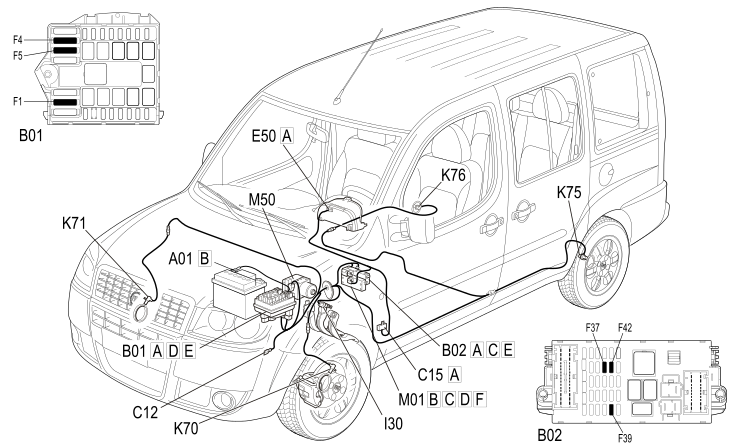

E7020 ABS - COMPONENT LOCATION
- Path
- Electrical equipment > 1 ELECTRICAL FUNCTIONS > E70 VEHICLE ELECTRONIC SYSTEMS > E7020 ABS > E7020 ABS - COMPONENT LOCATION
- Kind
- component location drawing
- Applies to
- engines: 1.4 8v, 1.6 16v, 1.3 JTD 16V, 1.9 JTD 8V; production: da 12/03; only with equipment: MY 2005
- Interactive page
- https://sloeber94.github.io/elrnDB-fDbl/en/#/223003402
Applies to: engines: 1.4 8v, 1.6 16v, 1.3 JTD 16V, 1.9 JTD 8V; production: da 12/03; only with equipment: MY 2005

Component code | Description | Reference to the assembly |
|---|---|---|
JUNCTION UNIT | ||
JUNCTION UNIT UNDER DASHBOARD | ||
ABS FRONT EARTH | ||
DASHBOARD EARTH, DRIVER'S SIDE | ||
INSTRUMENT PANEL | ||
IGNITION SWITCH | ||
BRAKE PEDAL SWITCH | ||
BODY COMPUTER | ||
LEFT FRONT WHEEL SENSOR FOR ABS | ||
RIGHT FRONT WHEEL SENSOR FOR ABS | ||
LEFT REAR WHEEL SENSOR FOR ABS | ||
RIGHT REAR WHEEL SENSOR FOR ABS | ||
ABS CONTROL UNIT |
Topics linked from this page (18)
- 3340A abs check/adjustment devices
- 5505A multi-function components
- 5520A ignition switch
- 5550D brake and reversing lights
- 5560B analogue control panel
- B001 JUNCTION UNIT
- B002 JUNCTION UNIT UNDER DASHBOARD
- C012 ABS FRONT EARTH
- C015 DASHBOARD EARTH, DRIVER'S SIDE
- E050 INSTRUMENT PANEL
- H001 IGNITION SWITCH
- I030 BRAKE PEDAL SWITCH
- K070 LEFT FRONT WHEEL SENSOR FOR ABS
- K071 RIGHT FRONT WHEEL SENSOR FOR ABS
- K075 LEFT REAR WHEEL SENSOR FOR ABS
- K076 RIGHT REAR WHEEL SENSOR FOR ABS
- M001 BODY COMPUTER
- M050 ABS CONTROL UNIT